1) Sales Performance Dashboard (Power BI + SQL)
Problem: Stakeholders need a fast, clear view of sales performance and profit drivers over time — and a way to spot margin leakage.
Approach: Built a SQL order-item dataset + monthly KPI layer, then created Power BI views (Overview → Drivers → Loss Deep Dive).
Impact: Faster decision-making with clear KPI tracking and actionable insights on where profit is being lost.
Step 1 — Executive Overview (What’s happening?)
Start with KPI cards + trends to quickly answer: “Are we growing? Are we profitable?”
- Shows overall Sales, Profit, Orders, AOV, Margin %
- Trend view highlights strong/weak months at a glance
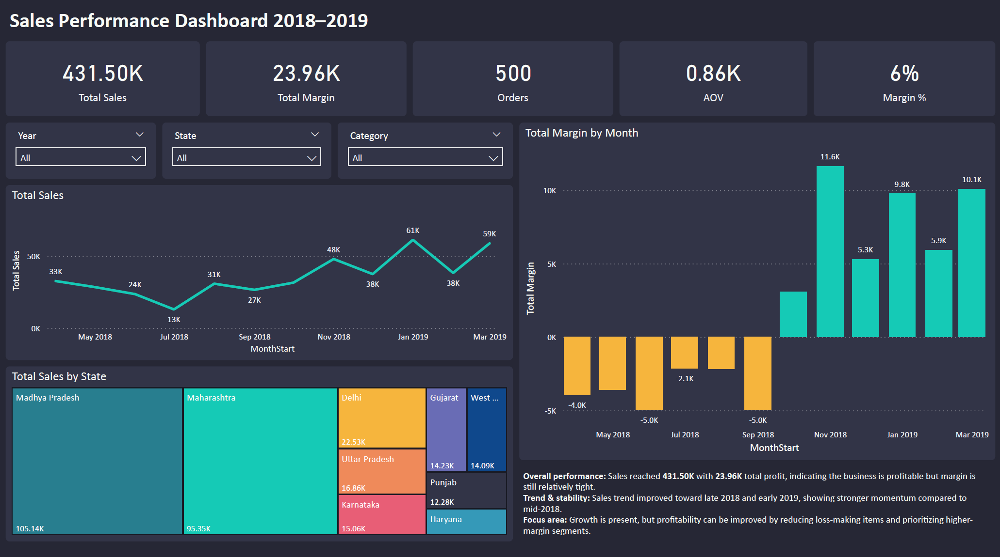
Step 2 — Drivers (What’s driving sales & profit?)
Break down performance by Category/Sub-category to find where margin is concentrated.
- Identifies high-profit vs low-margin segments
- Helps prioritize focus without needing more volume
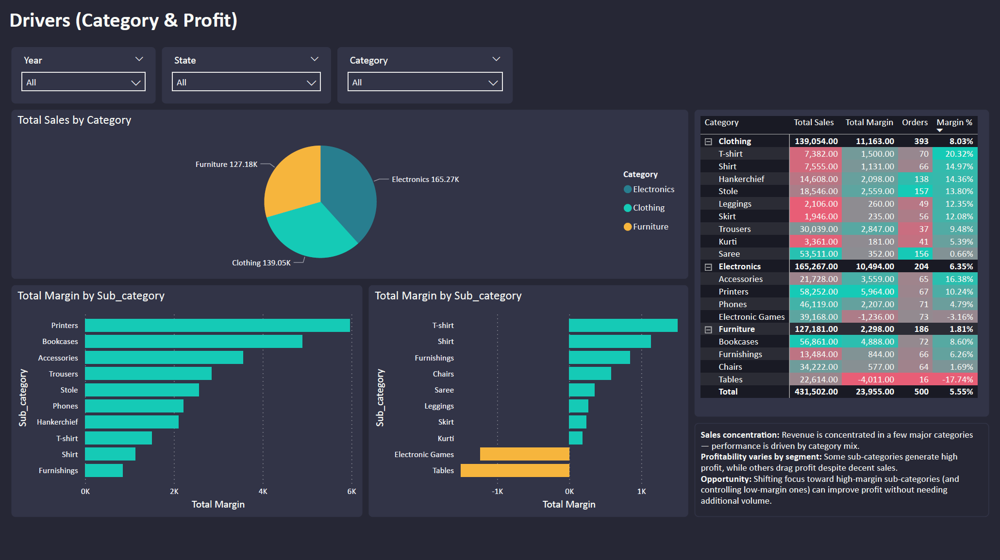
Step 3 — Loss & Margin Deep Dive (Where are we leaking profit?)
Zoom into loss-making orders/lines and pinpoint recurring loss drivers.
- Highlights loss distribution across orders/segments
- Action ideas: review pricing/discounts, control loss SKUs, improve mix
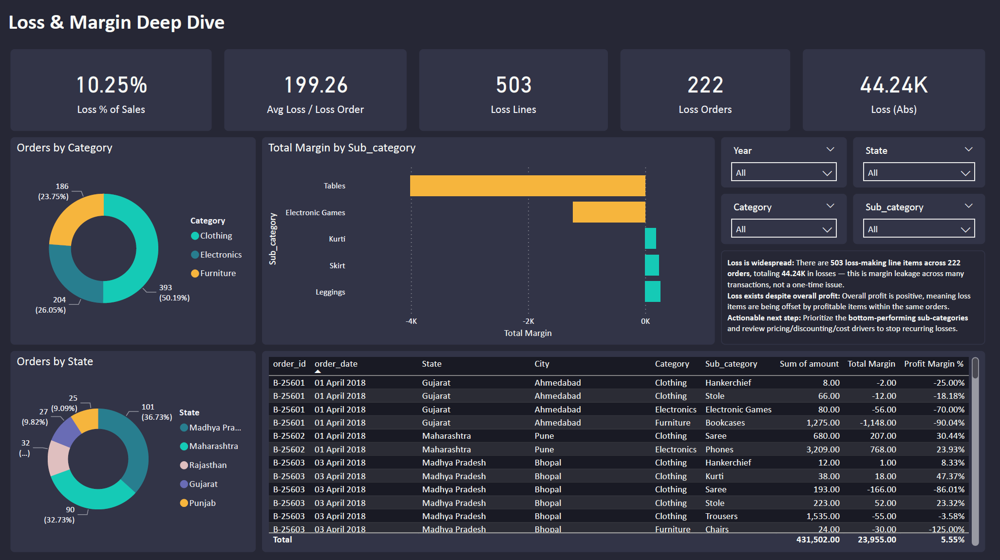
SQL Backbone (How KPIs were built)
SQL joins order headers + order details, then aggregates monthly KPIs (Sales, Profit, Units, Orders, AOV, Margin %).
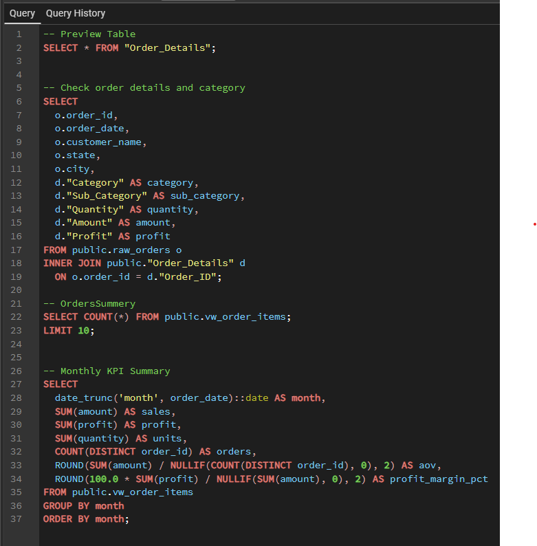
2) SQL Analysis: Customer Profitability (Logistics)
Problem: Identify profitable vs loss-making customers and explain the drivers behind profitability (cost, weight, service level).
Approach: Built a shipment-level profitability view (revenue vs ship_cost), aggregated results into a customer scorecard, ranked top/bottom customers, and analyzed late delivery impact + monthly profit trend (window function).
Impact: Highlighted loss drivers and recommended actions: repricing, minimum charge, and carrier/route optimization for high-risk lanes.
Step 1 — Delivered Shipments & Shipment Summary
Filter to delivered shipments, then aggregate item-level data into one row per shipment (revenue, weight, ship_cost).
- Ensures metrics are based on completed shipments
- Creates a clean shipment-level dataset for profitability
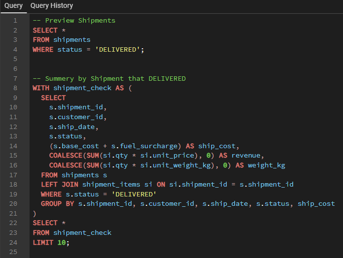
Step 2 — Top vs Bottom Customers by Profit (Window Function)
Rank customers by total gross profit to quickly identify best-performing and loss-making accounts.
- Uses ROW_NUMBER() to rank customers
- Helps prioritize retention vs repricing decisions
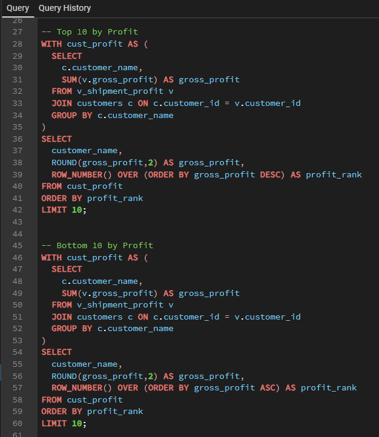
Step 3 — Customer Scorecard (Unit Economics)
Summarize revenue, ship_cost, profit margin, and cost per kg to explain why some customers lose money.
- Separates “high volume” from “high margin” customers
- Flags customers with high cost/kg as repricing candidates
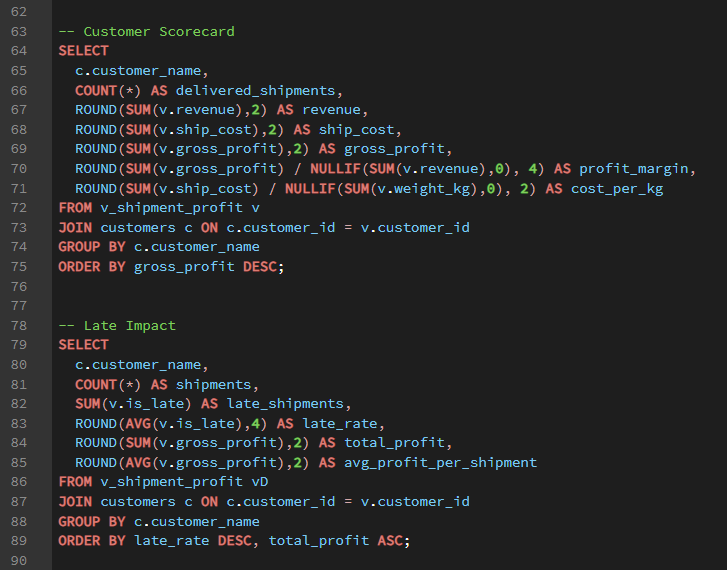
Step 4 — Monthly Profit Trend (Running Total)
Track profit by month and calculate cumulative profit using a window function to show business direction over time.
- Monthly profit trend for performance monitoring
- SUM() OVER creates cumulative profit (running total)
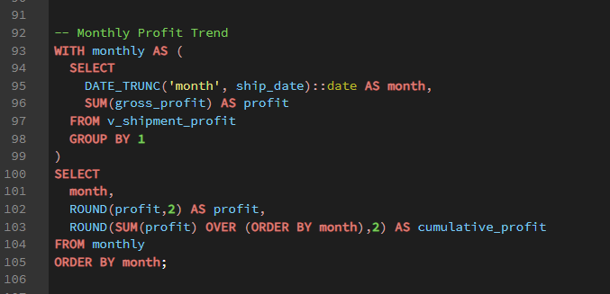
3) Power BI Dashboard: Corn Supply & Use (Market Analytics)
Problem: Business users need a clear view of corn supply-demand balance to understand market tightness (stocks), supply sources, and where usage is going.
Approach: Built a Power BI dashboard with an executive overview + deep dives into supply drivers and ending stocks, using YoY comparisons, composition charts, and quarterly trend views.
Impact: Faster market-read and decision support—users can quickly spot supply shifts, stock tightening/loosening, and demand mix changes without digging through raw tables.
Step 1 — Executive Overview (Supply vs Use)
Start with headline KPIs + trends to answer: “Is the market getting tighter or looser?”
- KPI cards summarize Total Supply, Total Use, Ending Stocks, and Stock-to-Use %
- Trend chart shows how supply and stock tightness change over time
- Use breakdown highlights major demand categories driving total use
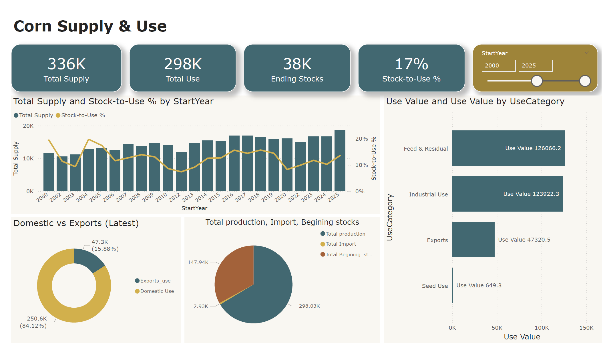
Step 2 — Supply Drivers (What’s changing supply?)
Decompose supply to see which levers actually moved the latest year.
- Waterfall chart shows YoY change by driver (Production, Imports, Beginning Stocks)
- Composition view explains “where supply comes from” (production-led vs import-led)
- Quickly tells stakeholders whether supply shift is structural or temporary
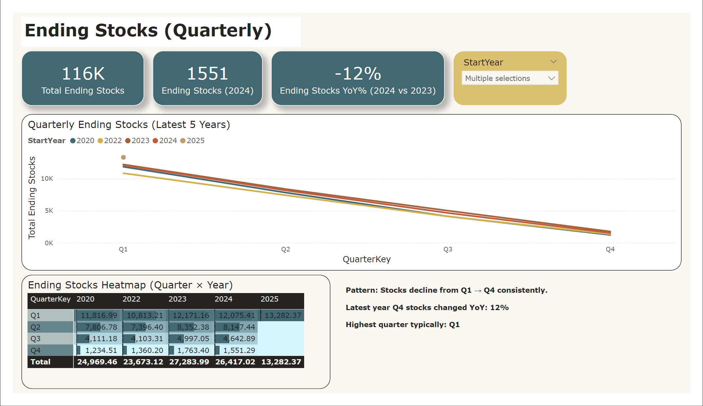
Step 3 — Ending Stocks Deep Dive (Seasonality + YoY)
Zoom into quarterly patterns and compare across recent years.
- Quarterly lines show consistent seasonality (Q1 → Q4 decline)
- Heatmap makes quarter-by-year comparison easy to scan
- YoY indicator flags whether stock buffer is improving or shrinking
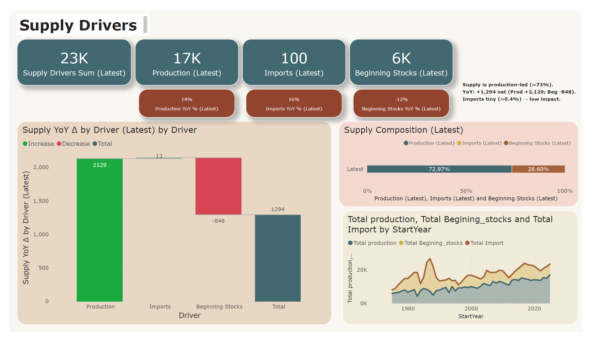
4) OTIF Performance Dashboard (PostgreSQL + SQL + Power BI)
Problem: Supply chain team needs a clear view of delivery service level (On-time, In-full, OTIF) and the ability to drill down by month, category, region, customer segment, and product.
Approach: Built a star-schema dataset in PostgreSQL, created a clean semantic layer with SQL views (vw_orders, vw_monthly_kpi, vw_product_kpi), then connected Power BI to deliver an interactive executive dashboard.
Impact: Faster performance monitoring and root-cause analysis—users can identify low-OTIF products/segments, detect monthly spikes, and prioritize improvement actions.
Step 1 — Data Model (Star Schema)
Set up a fact table for order lines and dimensions for customer, product, date, and targets. This ensures clean slicing/filtering and consistent KPIs.
- Fact: fact_order_line (order_qty, delivery_qty, delay_days, flags)
- Dims: dim_customer, dim_product, dim_date, dim_targets_order
- Goal: Make Power BI model stable + scalable
Step 2 — SQL Semantic Layer (Views)
Created a single source of truth using views to avoid repeated joins inside Power BI and keep KPIs consistent.
- vw_orders: joined fact + dims (ready for analysis)
- vw_monthly_kpi: monthly totals + rates
- vw_product_kpi: product-level OTIF ranking


Step 3 — Dashboard (Executive Overview)
Delivered a one-page dashboard designed for fast decision-making: headline KPIs + trends + breakdowns + top/bottom products.
- KPI cards: OTIF Rate, On-time Rate, In-full Rate, Total Qty, Avg Delay
- Trends: OTIF over time (YearMonth axis)
- Breakdowns: Category / Region / Segment
- Ranking: OTIF by product (top/bottom)
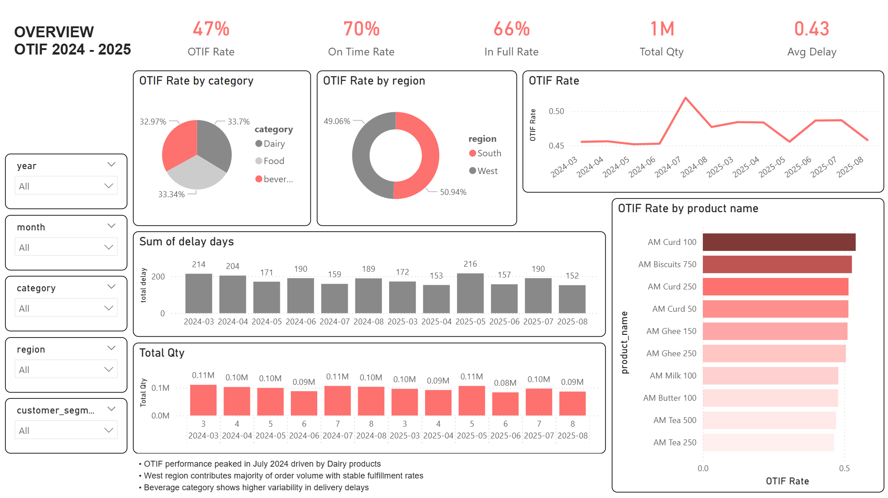
Insights (Example Findings)
- OTIF peaked around Jul 2024 and then normalized—likely driven by category mix or operational stability.
- Region performance is close, but product-level OTIF shows clear outliers worth investigating.
- Delay metric should be monitored as Late Rate or Avg Delay (Late Only) (not SUM delay_days).
5) E-commerce Funnel Overview Dashboard (PostgreSQL + SQL + Power BI)
Problem: E-commerce teams need a clear view of customer drop-off across the journey from Browse to Purchase, plus the ability to compare conversion and revenue performance by channel, device, and region.
Approach: Cleaned and transformed funnel event data in PostgreSQL, built reusable SQL views for KPI tracking and funnel analysis, then connected Power BI to create an interactive one-page executive dashboard.
Impact: The dashboard helps identify funnel bottlenecks, compare segment performance, and monitor revenue trends more efficiently for faster decision-making.
Project Workflow
This project follows a simple end-to-end analytics workflow: data preparation in PostgreSQL, KPI logic in SQL views, and dashboard development in Power BI.
- Data Preparation: standardized raw event-level data, validated event flow, and mapped funnel stages (Browse → Add to Cart → Checkout → Purchase)
- SQL Layer: created reusable views such as funnel_base, session_funnel, funnel_stage_summary, and daily_trend
- Dashboard: built a one-page executive view with KPI cards, funnel stages, channel/device analysis, revenue trend, and filters
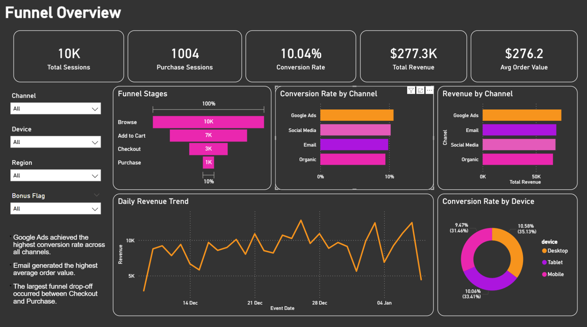
Insights (Example Findings)
- Google Ads achieved the highest conversion rate across all channels.
- Email generated the highest average order value, indicating stronger purchase quality.
- The largest funnel drop-off occurred between Checkout and Purchase.
- Desktop showed slightly stronger conversion performance than Mobile and Tablet in this dataset.